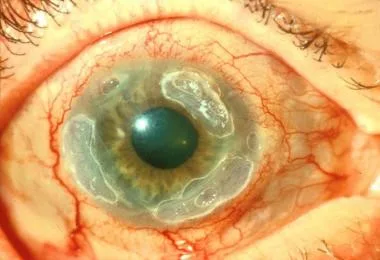
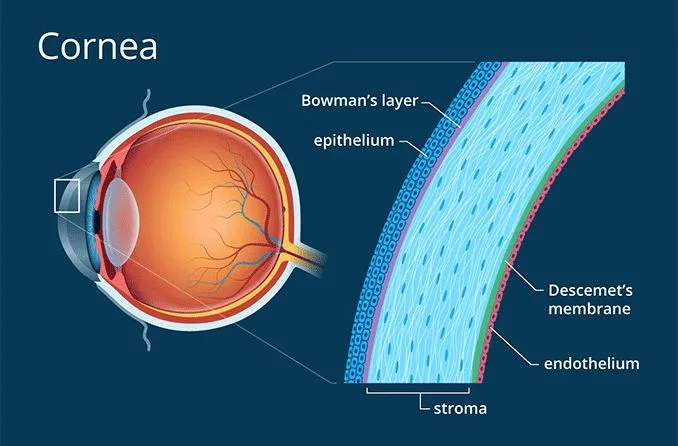
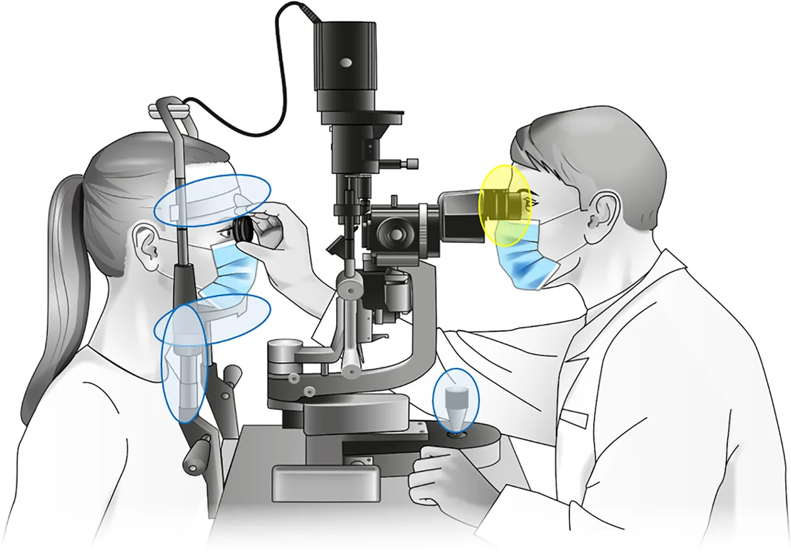

Expanded Nursing Uganda Explanation
Corneal ulcer should be studied as a medication-safety topic: indication, dose, route, timing, contraindications, expected effects, adverse effects, documentation and patient teaching all matter.
01 CORNEAL ULCERS
Corneal ulcers are open sores or epithelial defects with underlying inflammation on the cornea, the transparent front part of the eye that covers the iris and pupil.
These ulcers are often visible as grey to white opaque or translucent areas on the normally clear cornea. In some cases, they may be too small to detect without adequate magnification.
The cornea is useful in focusing light on the retina and protecting the inner eye structures. Corneal ulcers can be a serious condition leading to vision loss if not treated.
A Cornea ulcer will often appear as a grey to white opaque or translucent area on the normally clear and transparent cornea. Some corneal ulcers may be too small to see without adequate magnification.
Cornea is the structure in front of the eye. The cornea overlies the iris which is the coloured part of the eye and is separated from the iris by the aqueous fluid in the anterior chamber of the eye.
02 Causes of Corneal Ulcers
Infections:
- Bacterial Infections : Commonly caused by bacteria like Staphylococcus and Pseudomonas . These bacteria can invade the cornea, especially if the surface is disrupted. Contact lens wearers are particularly at risk, especially with improper hygiene or prolonged wear.
- Viral Infections : Herpes simplex virus (responsible for cold sores) and varicella-zoster virus (causing chickenpox and shingles) can lead to corneal ulcers. These viruses can cause recurrent infections, leading to chronic corneal ulceration.
- Fungal Infections : These occur mainly due to improper contact lens care or prolonged use of corticosteroid eye drops. Fusarium and Candida species are common culprits.
Trauma:
- Mechanical Injuries : Tiny cuts or scratches from metal, wood, glass, or any particle can damage the cornea, creating an entry point for infection. Even minor injuries can lead to significant complications if not treated properly.
- Chemical Burns : Exposure to caustic chemicals or irritants can cause corneal burns, leading to ulceration. Alkali burns (from substances like ammonia or lye) are particularly dangerous because they penetrate deeper into the cornea.
Pre-existing Eye Conditions:
- Dry Eye Syndromes : Conditions like keratoconjunctivitis sicca reduce the protective tear film, making the cornea more susceptible to injury and infection.
- Eyelid Disorders : Conditions that prevent the eyelid from closing completely, such as Bell’s palsy, can leave the cornea exposed and prone to ulceration. Entropion (inward-turning eyelid) and trichiasis (ingrown eyelashes) can cause constant irritation and lead to ulcer formation.
Immunological Disorders:
- Autoimmune Diseases : Conditions like rheumatoid arthritis and lupus can predispose individuals to corneal ulcers, either through direct inflammation or secondary infection. Immune-mediated conditions like scleritis can also contribute to ulcer formation.
03 Signs and Symptoms of Corneal Ulcers
- Redness : The conjunctiva (the white part of the eye) and the anterior chamber may appear red due to dilated blood vessels.
- Eye Pain : Ranges from mild to severe, often worsening with bright light exposure (photophobia).
- Visual Disturbance : Blurred vision, especially if the ulcer is centrally located.
- Tearing and Discharge : Excessive tearing, pus, or thick discharge from the affected eye.
- Foreign Body Sensation : A constant feeling that something is in the eye.
- Swelling : The eyelids may be swollen, and there may be noticeable edema around the ulcer.
- Visible Ulcer : In some cases, a white or grey round spot on the cornea may be visible.
04 Investigations
- Slit Lamp Examination : A slit lamp microscope is used to examine the eye in detail. A fluorescein dye is often applied to highlight the ulcer, making it more visible under blue light.
- Microbial Cultures: Swabs or scrapings from the ulcer are sent for microscopy, culture, and sensitivity testing to identify the causative organism and guide treatment.
- Corneal Sensitivity Test : This assesses the sensitivity of the cornea, which may be reduced in cases of viral ulcers or chronic conditions.
05 Management of Corneal Ulcers
Medical Treatment:
- Anti-Infective Agents: Antibiotic, antiviral, or antifungal eye drops/ointments are used depending on the cause. For viral ulcers, oral antiviral medications may also be prescribed.
- Cycloplegics : These are eye drops like cyclopentolate or atropine, used to dilate the pupil and relieve pain from ciliary muscle spasms.
- Steroids : These may be used cautiously to reduce inflammation but only after the infectious cause is under control. They are usually prescribed by an ophthalmologist to avoid worsening the infection.
Surgical Management:
- Eyelash Removal: If an ingrown eyelash is causing the ulcer, it may be removed along with its root. Recurrent cases may require electrolysis to destroy the hair follicle.
- Eyelid Surgery : In cases where an inward-turning eyelid (entropion) is causing the ulcer, corrective surgery may be necessary.
- Corneal Transplant (Keratoplasty) : If the ulcer causes significant thinning of the cornea, a corneal transplant may be required to restore the integrity of the eye.
06 Preventive Measures
- Eye Protection: Always wear protective eyewear when working with tools, chemicals, or in environments with flying debris.
- Proper Contact Lens Care : Wash hands before handling lenses, avoid using saliva to wet lenses, never use tap water for cleaning, and do not wear lenses overnight unless they are specifically designed for extended wear.
- Lubrication : Individuals with dry eyes or incomplete eyelid closure should use artificial tears to keep the cornea moist.
- Early Treatment : Seek prompt medical attention for red or irritated eyes that do not improve with over-the-counter drops within 24 hours.
07 Complications
- Corneal Scarring : A healed ulcer may leave a scar, leading to permanent visual impairment if the scar is centrally located.
- Secondary Infections : An untreated ulcer can lead to secondary infections, worsening the prognosis.
- Corneal Perforation : In severe cases, the ulcer may perforate the cornea, potentially leading to loss of the eye.
- Endophthalmitis : This is a severe infection of the interior of the eye, which can result from untreated corneal ulcers.
- Blindness : If not treated adequately, corneal ulcers can lead to significant vision loss or complete blindness.
- Individuals should wear eye protective gears when using power tools or when they may be exposed to small particles that can enter the eye ( like particles from grinding wheel or a weed whacker)
- Individuals who have dry eyes or whose lids do not close properly should use artificial teardrops to lubricate the eyes and keep them lubricated.
- If an eye is red and irritated and worsens or does not respond to OTC ( Over the counter) eyedrops within a day contact an Ophthalmologist promptly.
- People wearing contact lenses should be very careful about the way they clean and wear those lenses.
- Always wash hands before handling those lenses.
- Never use saliva to lubricate contact lenses because the mouth contains bacteria that can harm the cornea.
- Remove lenses from the eyes every evening and clean them.
- Never use tap water to clean the lenses
- Never sleep with contact lenses not designed for overnight wear in the eyes.
- Store lenses in disinfecting solutions overnight.
- Remove lenses whenever the eyes are irritated and leave them out until there is no longer any irritation or redness.
- Regularly clean the contact lens case, carefully read the instructions about contact lens care supplied by the lens maker, consider using daily disposable lenses.
Nursing Care Plan for Corneal Ulcer
- Assessment Nursing Diagnosis Goals/Expected Outcomes Interventions Rationale Evaluation
- Observation of severe eye pain, redness, tearing, and photophobia Acute pain related to inflammation and ulceration of the cornea as evidenced by patient verbalizing severe eye pain and sensitivity to light To reduce eye pain and discomfort within 3 days – Assess pain level using a pain scale and monitor changes – Administer prescribed analgesics and/or topical anesthetics as ordered – Apply cool compresses to the affected eye to alleviate discomfort – Encourage the patient to rest in a dimly lit room and avoid bright lights – Pain assessment helps in evaluating the effectiveness of interventions – Analgesics and topical anesthetics help in reducing pain and providing relief – Cool compresses reduce inflammation and soothe the eye – Resting in a dimly lit room minimizes light exposure, reducing photophobia – Patient reports a decrease in eye pain and discomfort, with less sensitivity to light
- Presence of a white or grayish spot on the cornea and purulent discharge Risk for infection related to bacterial or fungal invasion of the corneal ulcer. To prevent the spread of infection and promote healing within 1 week – Administer prescribed antibiotic or antifungal eye drops as ordered – Educate the patient on the importance of completing the full course of medication – Instruct the patient on proper hand hygiene before and after applying eye drops – Avoid the use of contact lenses until the ulcer has healed – Antibiotics or antifungals are essential for treating the underlying infection and promoting healing – Completing the full course of medication ensures that the infection is fully eradicated – Proper hand hygiene reduces the risk of further contamination and spread of infection – Contact lenses can aggravate the ulcer and hinder healing
- Assessment of visual acuity and patient’s ability to perform daily activities Impaired vision related to corneal ulceration as evidenced by blurred vision and difficulty performing daily activities To maintain or improve vision and functional ability within 2 weeks – Perform visual acuity tests to monitor changes in vision – Educate the patient on the need to avoid activities that strain the eyes (e.g., reading, using screens) – Encourage the use of protective eyewear to shield the eye from dust and foreign particles – Arrange for assistance with daily activities as needed – Visual acuity tests help in tracking the progression of the ulcer and its impact on vision – Avoiding eye strain supports the healing process and reduces discomfort – Protective eyewear prevents further injury and contamination of the affected eye – Assistance with daily activities ensures the patient’s safety and well-being during recovery – Patient’s vision remains stable or improves, with no significant impairment in performing daily activities
- Patient expresses concern about potential vision loss and the appearance of the eye Anxiety related to fear of vision loss and changes in eye appearance as evidenced by the patient expressing concern about the condition To reduce anxiety and improve the patient’s understanding of the condition within 1 week – Provide information about corneal ulcers, their causes, treatment, and prognosis – Reassure the patient that early and appropriate treatment can prevent permanent vision loss – Offer emotional support and encourage the patient to express their fears and concerns – Refer the patient to a support group or counselor if anxiety persists – Education empowers the patient with knowledge and reduces fear of the unknown – Reassurance helps the patient feel more confident in the treatment process – Emotional support fosters a therapeutic relationship and addresses the patient’s psychological needs – Support groups or counseling can provide additional emotional and psychological support – Patient reports feeling less anxious and demonstrates understanding of the condition and treatment plan
- Assessment of the patient’s adherence to treatment and follow-up care Knowledge deficit related to unfamiliarity with the treatment regimen and follow-up care as evidenced by the patient asking questions about the medication and care plan To ensure the patient understands and adheres to the treatment plan within 1 week – Provide clear, step-by-step instructions on how to administer eye drops and medications – Educate the patient on the importance of attending follow-up appointments – Provide written materials or visual aids to reinforce teaching – Encourage the patient to ask questions and seek clarification about the treatment – Clear instructions ensure proper medication administration and adherence to the treatment plan – Follow-up appointments are essential for monitoring healing and making necessary adjustments – Written materials or visual aids enhance understanding and retention of information – Encouraging questions ensures that the patient fully understands the treatment and care plan – Patient demonstrates proper administration of eye drops and expresses confidence in managing the treatment plan
08 Nursing Uganda Clinical Lens
Use Corneal ulcer as a practical nursing topic, not only a memorized definition. Study medicines through indication, safety checks, expected response, adverse effects and patient teaching.
- What to understand first: define corneal ulcer, identify the normal or expected pattern, then explain what changes when the patient is unwell.
- Why it matters in care: the nurse must recognize risk early, explain findings clearly, document accurately and know when to escalate.
- How to revise it: connect each point to assessment, nursing diagnosis or care problem, intervention, rationale and evaluation.
09 Assessment Guide
- Diagnosis or reason for the medicine, allergies, pregnancy status and previous reactions.
- Current medicines, herbal products, renal or liver risk and baseline observations.
- Dose, route, timing, dilution, expiry date and documentation requirements.
10 Nursing Priorities, Rationales and Outcomes
- Apply the rights of medication administration and facility policy.
- Monitor therapeutic response and class-specific adverse effects.
- Educate the patient on purpose, timing, missed doses, warning symptoms and adherence.
The rationale for these priorities is patient safety: nursing actions should prevent deterioration, reduce discomfort, support recovery and create clear evidence for the next caregiver.
- Expected outcome: The medicine produces the intended effect without preventable harm, and administration is accurately documented.
11 Patient Teaching and Revision Check
- Explain corneal ulcer in simple language the patient or caregiver can repeat back.
- Teach warning signs, medicine or follow-up instructions, hygiene or lifestyle points where relevant.
- For exams, prepare a short answer using: definition, causes or risk factors, signs, assessment, management, complications and prevention.
- For ward practice, document baseline findings, actions taken, patient response and the plan for review.
Illustrations and Diagrams (6)





Related Video Lectures
Watch nursing lecture videos on YouTube for this topic. Opens in a new tab.
Watch on YouTubeExternal link: YouTube may use its own cookies and terms. Nursing Uganda is not affiliated with YouTube.